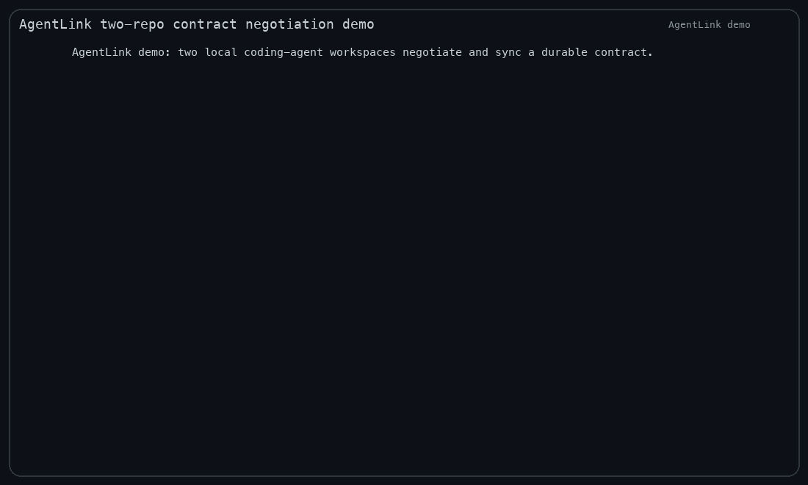

Different repos.
Different agents.
One shared contract.
AgentLink is an MCP server and CLI for coding agents coordinating across repositories. Keep messages, interface decisions and approvals in durable files—not lost in terminal chat.
api-agent → web-agent Propose: GET /accounts/:id/summary web-agent → api-agent Include expiresAt in the response. ✓ Contract updated ✓ Participant approvals recorded ✓ CONTRACT.md synced to peer repo
Agree on the interface.
Then write the code.
When a backend and frontend live in separate repos, a change needs more than another prompt. Both sides need an explicit agreement.
AgentLink gives coding agents a local coordination bus with append-only conversation history and a reviewable .agentlink/CONTRACT.md.
- Start a focused conversation
Exchange compact proposals and requirements without copying whole repository contexts.
- Write down the agreement
Update contract sections and record participant approvals. Approval gates can prevent premature acceptance.
- Sync the handoff
Copy the accepted contract to a peer workspace so each repo implements against the same interface.
Two workspaces. A durable agreement.

Install once. Connect your coding agent.
Install the public @sruthik/agentlink npm package. Node.js 20 or newer is required. Run your agent in the repository you want to coordinate.
npm install -g @sruthik/agentlink
agentlink version
agentlink doctorCodex CLI
codex mcp add agentlink -- agentlink-mcpStart a new Codex session and ask it to use the AgentLink MCP tools for a contract handoff.
Claude Code
claude mcp add -s user agentlink -- agentlink-mcpRestart the session and confirm the AgentLink server appears in the MCP tool list.
OpenCode, Gemini CLI and other MCP clients
Configure a local stdio MCP server with command agentlink-mcp. Configuration format varies by client; see the setup documentation and your client's MCP guide.
agentlink setup --harness all
# Or inspect instructions without a global install:
npx @sruthik/agentlink setup --harness allThe v0.1.1 real-client release smoke was tested with Codex CLI. Other clients have setup guidance; they are not all independently end-to-end verified.
A small tool with a specific job.
What is AgentLink?
AgentLink by Sruthik Issac is an open-source TypeScript CLI and MCP server for local-first coordination between coding agents. It provides structured conversations, contract updates, approval gates and cross-repository contract sync. The npm package is @sruthik/agentlink.
Does it automatically connect agents on different machines?
No. AgentLink stores its bus in local workspaces. Contract sync targets a filesystem path accessible on the same machine. It is not a hosted messaging service, remote transport or automatic global agent network.
Does AgentLink send my source code to a cloud service?
AgentLink's coordination state is local. Your coding-agent client and model provider still have their own data handling: any content an agent reads may enter that client's model context. Keep shared messages and contracts focused and avoid putting secrets in them.
Is tmux required?
No for the core MCP conversation and contract workflow. tmux is used for optional discovery of live agent panes and guarded CLI delivery to them.
Where can I report a problem?
Open a GitHub issue with the AgentLink version, coding-agent client and a minimal reproduction. Do not include credentials or private source code.